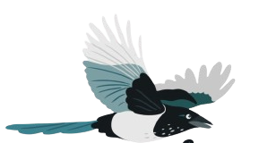

一盞明燈
在學習的過程中我總希望能有人不段引領我前行，如今我希望我能給予其他人這樣的感覺。
附註:我認為檯燈之於燈塔是個不錯的比喻，此外，他可以為你的電子設備充電，保持電量充足是非常重要的!
一部底片相機
沒有什麼比為眼前值得紀念的事物留下紀錄來得令人興奮了，雖然我不需要這樣物品來紀錄，但我希望你可以。
附註:我並沒有附上底片，你可以為自己挑選心儀的底片!
自由的鳥兒

喜鵲是帶來好運的象徵，我評估後認為送一隻真實的鳥會造成一些問題，因此我挑選了美麗的胸針。
附註:不瞞你說，我時常會想像自己是一隻小鳥。